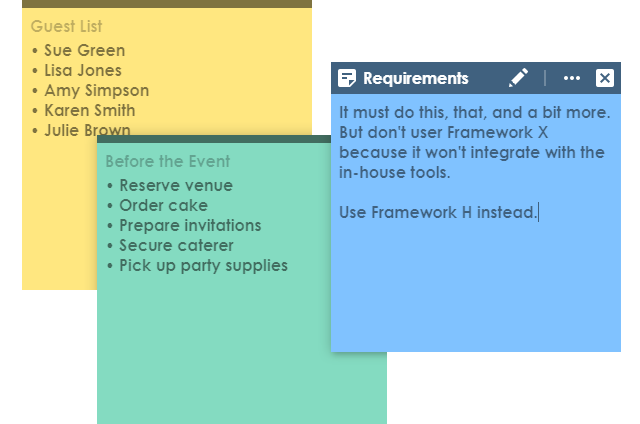
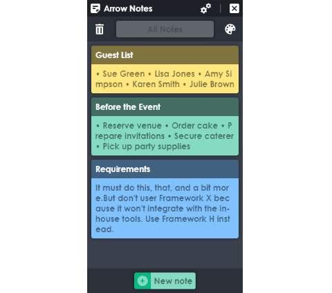
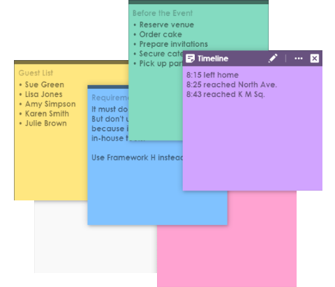
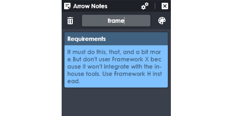
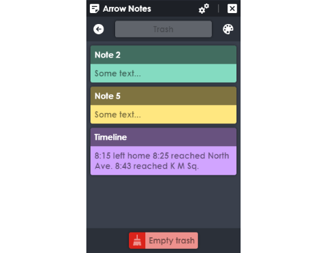
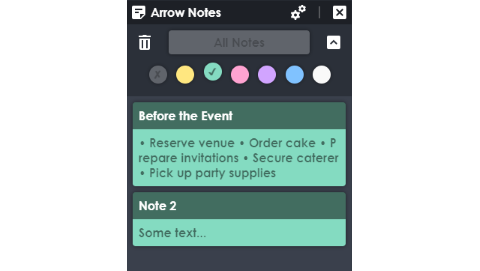
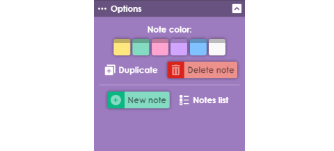
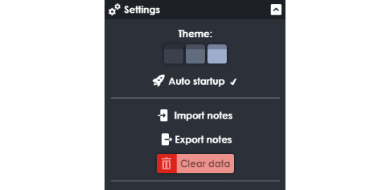

Arrow Notes
Beta 1.2.0 / Free
Created on: 2019.01.10
Last update: 2019.01.28
Cross-platform
desktop notes application.
The program allows users to take notes using
post-it note - like windows on their desktop.
Download for PC:
Windows
Releases

Notes list
The list of notes has many features and
provides a preview of their text.

Customization
You can move notes, change their size, and choose
their color from the six suggested colors.

Text filter
You can search for words, letters, symbols
in all notes at the same time.

Trash
All deleted notes are placed in the trash.
You can restore them at any time.

Color filter
You can sort notes by color.
This feature is perfectly combined with the search.

Note options
Each note has its own options and
does not depend on others.

Settings
Three themes are available.
The application can start automatically at system startup.
You can save notes to a file or load them from a file.